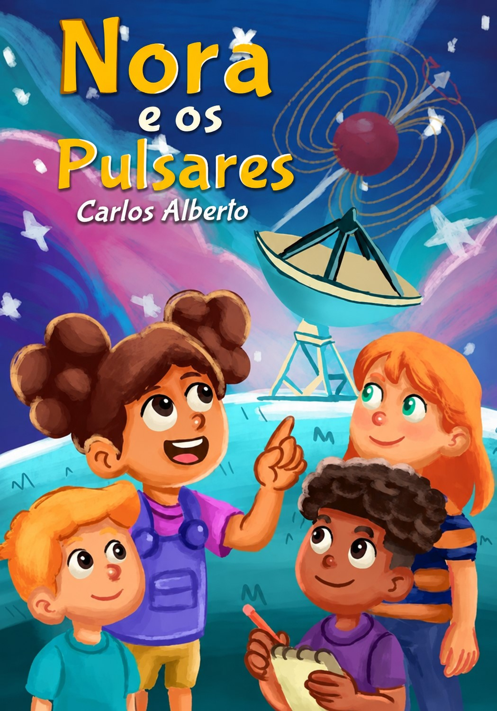

LITERATURA · CIÊNCIA · RADIOASTRONOMIA
Nora e os Pulsares
Nora é uma jovem cientista que acredita ter feito uma descoberta científica, mas um pequeno detalhe muda tudo.
Lançamento · Novembro de 2026
FLIC
SOBRE O LIVRO
Uma história sobre ciência e descoberta
Nora e os Pulsares aproxima literatura e ciência a partir do universo da radioastronomia. A narrativa acompanha Nora diante de uma possível descoberta e das perguntas que surgem quando aquilo que parecia uma resposta precisa ser observado novamente.